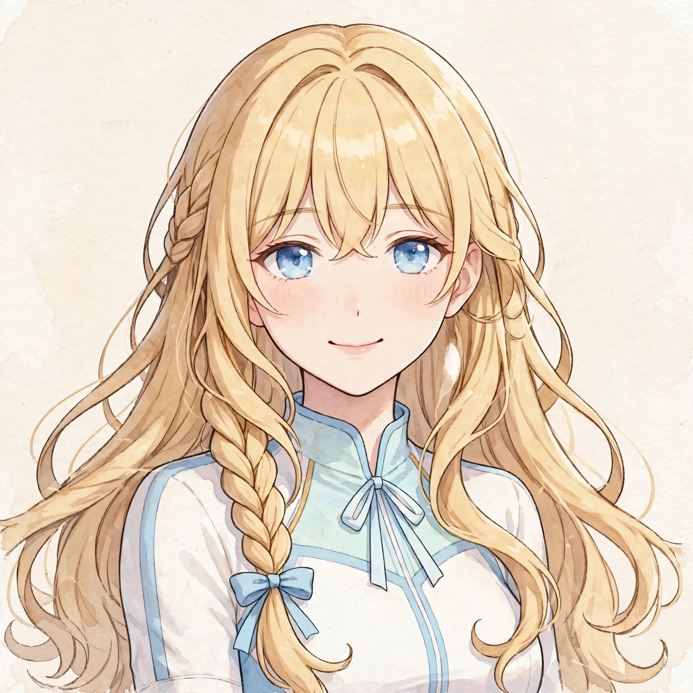

肩のこりが気になるときの日常ケア：温める・動かす・力を抜く工夫
テーマ：肩のこりが気になるときの日常ケア
はじめにお読みください
このコラムは、一般的な健康情報としてセルフケアの工夫を紹介するもので、医療行為ではありません。紹介する内容は、特定の症状への効果を保証するものではありません。
1はじめに
11月に入り、朝晩の冷え込みが増してきました。寒い場所では、知らないうちに肩に力が入ったり、体が縮こまったりしやすくなります。デスクワークやスマートフォンなどで同じ姿勢が長く続くことも、肩のこりを感じるきっかけの一つとしてよく挙げられます。この記事では、日常の中で無理なく取り入れられる工夫を、温める・動かす・力を抜くの3つに分けて紹介します。
2同じ姿勢が続くときに気をつけたいこと
長時間、同じ姿勢で作業を続けると、肩や首まわりがこわばったように感じることがあります。肩をすくめたまま作業していないか、画面をのぞき込むように顔が前に出ていないか、ときどき自分の姿勢を振り返ってみましょう。こまめに姿勢を変えること自体が、肩まわりを休ませる時間になります。
3温める工夫
首元や肩まわりを冷やさない服装を心がけましょう。マフラーやストール、首元まで覆える上着などで、冷たい風が直接当たらないようにします。入浴の際は、湯船につかって体全体を温める時間をもつのも一つの方法です。温かい飲み物で手を温めながら、ほっと一息つく時間を作るのもよいでしょう。寒い部屋で作業する場合は、室温や服装の調整もあわせて見直してみてください。
4動かす工夫
肩まわりをゆっくり動かす習慣を取り入れてみましょう。たとえば、両肩をゆっくりと大きく回す、両腕を大きく回す、両手を組んで上に伸びをする、といった動きがあります。いずれも、痛みのない範囲で、ゆっくりと行うことが大切です。痛みや違和感がある場合は、無理に動かさず、動きを小さくするか、その日は休ませてください。30分から1時間に一度は立ち上がって歩いたり、水分をとったりするなど、作業の合間に体を動かす時間をはさむのもおすすめです。
5力を抜く工夫
肩に力が入っていると感じたら、まず深呼吸をしてみましょう。息を吸いながら両肩をゆっくり上げ、息を吐きながら肩をストンと落とす動きを、数回くり返します。寝る前には、部屋の明かりを落として静かに過ごす時間を作り、1日の終わりに肩の力を抜く習慣をもつのもよいでしょう。枕の高さや寝具の硬さが合っていないと感じる場合は、寝心地を確かめながら、自分に合うものを探してみてください。
6受診の目安
次のような場合は、セルフケアだけで様子を見るのではなく、医療機関へ相談することを検討してください。腕や手にしびれがある、力が入りにくい、痛みが長く続く、強い痛みがある、頭痛や発熱、胸の症状を伴う、事故やけがの後に痛みが出た、といった場合です。症状の原因を自分で決めつけず、気になる症状が続くときは早めに相談しましょう。
7セラフィナのひとこと

セラフィナ
「寒くなってきましたね。肩に力が入っていたら、ふーっと息を吐いて、肩をストンと落としてみてください。無理のない範囲で、今日できることからで大丈夫ですよ。」（案内役：セラフィナ）